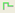
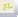
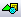
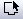
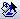
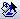

Cheat Sheet for  ¶
¶
- Start Schematics
 PADS DX Designer
PADS DX Designer - Start PCB
 PADS Layout
PADS Layout
- Common Icons
- Schematics
- Layout
- Router
 Constraint Manager
Constraint Manager- Library Tools
Schematics¶
Nuevo Proyecto¶
en “Start Page” tab, escoge en “New Project” > PADS Integrated > PADS ODA
Nueva Hoja¶
pg down en la última hoja activa
Cambiar tamaño de página¶
- Deselecciona todo
- en “Properties”, cambiar “Drawing size” y “orientation”
- En página,
RClick> Change border… para escoger un borde adecuado
Mostrar Partes¶
View > PADS Databook
Deshabilitar PADS Databook¶
Setup > Settings > Licensing, desactiva “PADS Databook database support”
Partes¶
Agregar¶
- Escoge símbolo en PADS Databook
- arrastra y suelta en la página
Con Nets¶
Activa “Add Nets”
Con nombres de nets¶
Activa también “Add Net Names”
Agregar tierra, VDD, links, etc¶
Add > Special Components o View > My Parts, en tab “Special Components”
Consejo
- Una misma parte puede tener múltiples símbolos!
- Si colocas una parte sobre una net, será cortada automáticamente!
Manipulación¶
Rotar¶
F3 o con 
Reflejo Horizontal¶
F4 o 
Espejo Vertical¶
F5 o 
Arreglo¶
- Selecciona componentes

- Define filas y columnas
- Define separación
Duplicar¶
- Selecciona objeto, luego
Ctrl+C,Ctrl+V, o - Selecciona objeto, luego
Ctrl+LClick, arrastra y despuésLClick
Nets¶
Nueva Net¶
no LClickal inicio- Draw and
LClickal final
Agregar múltiples net¶

arrastra LClickpara seleccionar pines de partidadrag LClickto destination pinsRClick
Agregar nets a pines¶
- n o
Alt+LClicksobre el pin
Bus¶
Agregar¶
bo LClickpara dibujarESC- En Properties > Name, asigna NET_NAME[n:0]
Extraer nets desde el bus¶
- RClick en Bus > Rip Nets
- Selecciona nets (
Ctrl= multi) LClick
Conectar un símbolo a un bus¶
- Toca el bus con los pines del símbolo
- Selecciona los índices y el orden
- Aleja el símbolo del bus para dibujar las nets
Links¶
Configuración¶
- View > My Parts
- Setup > Settings
- En Cross Probing, activa “Zoom Fit to Selected objects”
- En Advanced, activa “Automatically synchronize Links and net names”
- Click OK
Agregar¶
- En My Parts > Special Components > Link
- Conectar link a una net
- In properties, escoge un nombre para el link
- Agrega otro Link con la misma net
Blocks¶
Create a block for an existing circuit¶
- Prepare circuit to extend ports nets
- Create a box crossing the ports nets with the border
- Set block name
LClickin blockLClickin (extract schematic)
(extract schematic)
Edit a block¶
In Project > Blocks, double LClick on the block
Edit a block directly from schematic¶
On block RClick > Push
Filtros de Selección¶
y luego selecciona los tipos de elementos habilitados
Agregar filtros personalizados¶
Escoge “settings…” en combobox
Create a PCB from schematics¶
- or Tools > PADS Layout
- Select template (System Default start-up file is OK)
PCB¶
Begin¶
1. Sync to Schematics¶
Setup > Project Integration, click in amber lights
2. Set Board Outline and cutouts¶
 >  and draw
3. Set Layers¶
Setup > Layer Definition
Contornos y zonas restringidas¶
Editar contorno¶
- Borrar selección
RClick> Select Board Outline- Selecciona la línea de contorno y edita
Agregar restricción¶
>  , dibuja y define parámetros
, dibuja y define parámetros
Capas¶
Definir Capas¶
Setup > Layer Definition
Cambiar el número de capas¶
- Click Modify
- Definir el nuevo número
- Revisar reasignación de capas
Zoom y desplazarse¶
Desplazar arriba/abajo¶
mouse wheel
Desplazar izquierda/derecha¶
Shift+mouse wheel
Zoom¶
Ctrl+rueda del mouse
Selección¶
Sencilla¶
LClick
Región¶
LClick y arrastra
Agregar/quitar de la selección¶
Ctrl+LClick en el objeto
Visibilidad¶
Colores de Nets¶
Ctrl+Alt+N- Seleccionar net o class
- Click “Add”
- Define color y qué mostrar
- Activar “color traces by net” para mostrar pistas con el mismo color
Colocar Partes¶
Dispersar¶
Tools > Disperse Components
Mover componentes¶
- Selecciona parte
Ctrl+EoLClick y arrastrar
Rotar¶
Ctrl+R o tab
Cambiar capa¶
Rclick > Flip Side o Ctrl+F
Consejo
- Es más fácil escoger componentes en el esquemático usando cross-probing(usa filtros para seleccionar sólo simbolos)
- Puedes crear un cluster de clusters!
Agrupar componentes (cluster)¶
RCLick> Select Components- Escoger partes
RClick> Create Cluster
Seleccionar clusters¶
RClick > Select clusters
Colocar partes de un cluster¶
LClickpara seleccionar ClusterRClick> Break- Colocar partes
Planos de Cobre¶
Agregar¶
 para cobre sólido o  para relleno o
para cobre sólido o  para relleno o  para planos sólo en capas de tipo “mixed plane”
para planos sólo en capas de tipo “mixed plane”- Dibujar Figura
Agregar corte¶
 para cobre sólido o
para cobre sólido o  para relleno o
para relleno o  para planos sólo en capas de tipo “mixed plane”
para planos sólo en capas de tipo “mixed plane”
Editar¶
- Borrar Selección
- RClick > Select Board Outline
- Escoge trazo del polígono y edita
Truco
RCLick para más opciones de polígonos
Ruteo¶
Activar Dynamic Route and Bus Route¶
- Tools > Options > Design
- Activa On-line DRC a Prevent
Comenzar ruteo¶
LClicksobre el pin o pistaF3
Confirmar un segmento¶
LClick o espacio
Deshacer un segmento¶
Backspace
Cambiar Capa¶
F4 o l<n>
Autocompletar¶
Doble LClick
Detener Ruteo¶
Ctrl+LClick
Cambiar Ancho¶
w<width>
Agregar una vía¶
Shift+LClick
Agregar un testpoint¶
Mientras se rutea: RClick > Add testpoint
Agregar un jumper¶
- Mientra se rutea
RClick> Add jumper - Definir orientación y largo
Vía en SMD¶
En Layout ()
RClick> Select Traces/PinsLClicken el padRClick> Add Via at SMD
Consejo
Para habilitar vía en SMD, distancia vía a pad para la misma net debe ser cero
Bus Route¶
- Rclick > Select Pins/Vias/Tacks
- Seleccionar pines a rutear como bus
- RClick > Bus Route
Consejo
Si uno de las pistas no puede ser ruteada automáticamente, se pedirá rutear por separado.
Cross-probing¶
It works for integrated projects.
Setup¶
On Schematics¶
- Setup > Settings
- At Cross Probing section, Check all checkboxes. Click OK.
- Setup > Cross Probing needs to be checked.
On Layout and Router ¶
- Tools > Options
- In Cross Probing Tab, Check “Enable”
- Choose Action.
Consejo
Pan is good for placing/routing
Using¶
Select in Schematics, work in Layout/Router¶
- Arrange Schematics and Layout/Router windows in splitted screen or different displays
- In Layout/Router,
RClickand choose the selection type - In Schematics, select the components
- Go to Layout/Router, in a region without elements to select press
Ctrl+LClick, to avoid losing the selection - Perform the selected operation
Select in Layout/Router, work in Schematics¶
- In Layout/Router, select the elements
- In Schematics, in a region without elements to select press
Ctrl+LClick, to avoid losing the selection - Perform the selected operation.
Vias¶
Nota
- Pad stack La forma de la vía en las capas
- Via Span La vía predeterminada para pasar de una capa a otra
- Through Via Vía que atraviesa toda las capas
- Partial Via Vía que atraviesa sólo algunas capas (vías blind y buried)
Setup¶
Set via Pad Stacks¶
- En Layout () Setup > Pad Stacks
- Pad Stack type a Via
- Selecciona vía y cambia propiedades
Agregar un vía padstack¶
- In “Pad Stacks”, defina tipo de Vía, luego Click en “Add Via”
- Elegir “through” o “partial”
- Define capa de inicio y fin para partial vias
- Define estilos de pads for pad y thermal
Define vías predeterminados¶
- En Layout () Setup > Via Spans
- Elige Default via para cada celda según los tipo de vías y capas
Elige vías por Capa/Clase¶
En Constraint manager () > Net Classes, set Via Assignments (el mismo diálogo de “Via Spans”)
Stitching vias¶
Setup¶
- En Layout () Tools > Options, Via Patterns page
- Escoge GND en “Add vias from net”
- Escoge tipo de vía
- Para shapes, escoge Net and Via type si es necesario
Agregar stitching vias alrededor nets¶
RClick> Select Nets- Escoge las nets
RClick> Add Via Shield- ESC
RClick> Select Pins/Vias/Tacks- Mover/quitar vías no deseadas
Rellena una figura con stitching vias¶
- Escoge una figura “solid copper” ( > )
RClick> Select Shapes- Selecciona figura
RClick> Via Stitch
Diff Pairs¶

Separation and Spacing

Via types
Setup¶
Set Diff Pair in schematics¶
- Select net
- In Properties, set the pair net in “diff pair” field
Set diff pair in constraint manager:¶
Edit > Differential Pairs > Auto Assign Differential Pairs…
Set patterns for Net name and Pair net Name
Click Apply
Consejo
Nets set in schematics won’t appear in auto assign dialog
Set Diff Pair Spacing¶
- At Net Classes select class
- Change Differential Spacing
Set Max Separation¶
- At Constraint Classes select the class
- Select “Nets” tab
- Select class or net
- Set Separation Distance
Set diff pair length¶
In constraint manager ()
- Click in constraint classes
- Select diffpair
- Set Min and max length.
Routing¶
Route Diff pairs¶
In Router () Same as route a single trace
Change leader routing trace¶
tab
Split traces¶
Ctrl+X
Route separately/join¶
Ctrl+Z
Tune diff pairs¶
- In router ()
RClick> Select nets- Click on one net of diff pair
RClick> Select Differential pairsRClick> Tune
Tune diff pair Options¶
In Router () Tools > Options > Routing Page > Tune
Parts¶
Consejo
Use Library Tools
New Part¶
- Add symbol
- Add decal
- Add part and map symbols and decals
Calling from Schematics¶
Tools > PADS Library Tools
Calling from Layout¶
File > PADS Library Tools
Add a Symbol (box type)¶
- Select symbols section and partition.
- Over Partition
RClick> New Symbol or Symbol Wizard - Choose Module and Fracture for big pin counts parts. Fill rows.
Truco
You can copy/paste from Excel!
Add a Decal¶
- Select decals section and partition
- Over Partition
RClick> New Decal… - If possible, use Decal Wizard
Use Decal Wizard¶
- >

- At bottom, select units
- Choose type (dual, quad, polar, BGA/PGA)
- Fill data, click OK.
Add a Part¶
- Select “Parts” section and partition
- Select Logic Family (UND by default)
- In PCB Decals assign Decals
- In Gates, Click “Add” and choose symbol in “CAE Decal 1”, “CAE Decal 2”, etc
- Make a copy of C:PADS ProjectsSamplesPart_Pins_Template.csv and complete the info for Pins Tab.
- In “Pins” tab, click on Import CSV and import the completed CSV
- Click “Check Part” and fix issues before click OK
Part with fractures¶
In Gates Tab, add multiple Gates with Swap 0
Part with multiple symbol representations¶
Add CAE Decal 1, CAE Decal 2, etc.
Part with duplicate symbols (E.g., a quad nand IC)¶
Add many gates with the same swap number, but different to 0
Add data into databook¶
- Choose partition at Parts section
RClick> Edit parametric data
Nota
- Pins Tab Information:
- Pin Group Gate A, Gate B, Unused pin or Signal
- Number Decal number
- Name Symbol name
- Type Source, Bidirectional, etc
- Swap Gates Swap groups
- Seq Symbol pin name
Constraints¶
Consejo
Use Constraint Manager
Definitions¶
Net Classes¶
To set Via assignments, layers where to route, trace widths and diff pair spacing. Applicable to nets.
Clearances¶
To set general clearances (via to via, via to pad, etc). Just use the (Default Rule), except if custom clearances between Net classes is required (for example, distance between two buses).
Constraint classes¶
To set stub lengths, topology, net lengths, max number of vias, and diff pair separation distance
PartQuest ¶
Registrarse¶
- Ingresar a http://partquest.com
- Arriba a la derecha, hacer click en “Create Account”. Se redigirá a la página de mentor.com
- Llenar el formulario y hacer click en “Create Account”
- Una vez registrado, iniciar sesión arriba a la derecha, en “log in”
- Hacer click en tu nombre, y luego click en “My Profile”
- En “Desktop Integration”, seleccionar “Direct Download”
- En “Default flow”, seleccionar “PADS Integrated”
Descargar partes¶
Descargar una sola parte¶
- Abrir PADS Maker Schematic y cargar un proyecto
- En los checkboxes, activar “Symbol/Footprint”
- En la barra de búsqueda, ingresar el nombre de la parte
- (Recomendado) activa también “RoHS Complaint” y “Lead Free”
- Click en “More” en la fila seleccionada
- Revisar que no hayan advertencias en la parte
- Click en “Download”. Seleccionar la partición si es necesario
- Una vez que la parte se descargó (archivo .pqz), hacer click sobre ella
- En PADS Maker Schematics, la parte será automáticamente incluida en la biblioteca “PartQuestDirect”
Consejo
Puedes usar filtros para reducir el número de resultados
Bajar múltiples partes¶
- Sigue los mismos pasos que para una sola parte, pero en vez de hacer click en “Download’m click en “Add to Project”. Selecciona el proyecto o crea uno nuevo.
- Cuando todas las partes han sido incluidas, hacer click a la izquierda en “My Projects” y seleccionar en proyecto
- Hacer click en las partes a descargar o en “Select All”
- Click en “Download” sobre los encabezados de la tabla.
- Doble click en el archivo .pqz para agregar las nuevas partes a la biblioteca.